原典：坂口安吾『桜の森の満開の下』
桜の森の満開の下――テルペン・シンギュラリティ：感覚の特異点
🔬 植物由来揮発性モノテルペン類が辺縁系に及ぼす神経薬理作用、広大空間における感覚入力過多（サブライム体験）の脳機能イメージング、孤独感の神経基盤
満開の桜の森の下を通るとき、なぜ人は圧倒的な孤独と狂気に襲われるのか。山賊と妖艶な女の物語を、環境神経科学と感覚知覚の極限状態として再解釈し、美の正体に迫るダークファンタジーSF。
日本文学の不朽の名作（青空文庫）を、実在する査読付き先端科学論文（Nature / Science / Cell 等）の知見で再構築した本格SF小説アーカイブ。
Mac mini M4 ローカルAI（Ollama & Draw Things FLUX.2）により執筆・挿絵生成し、GitHub Pages上で公開しています。
満開の桜の森の下を通るとき、なぜ人は圧倒的な孤独と狂気に襲われるのか。山賊と妖艶な女の物語を、環境神経科学と感覚知覚の極限状態として再解釈し、美の正体に迫るダークファンタジーSF。
 #62
#62
夕暮れの列車の中で老人が見せてくれた精巧な押絵。双眼鏡のレンズ越しに覗き込んだ瞬間、光学メタマテリアルに封じ込められた明治の浅草凌雲閣の記憶と、時間を超えた切ない恋が生き生きと動き出す。
人間不信の暴君ディオニスが支配する高度監視都市で、親友セリヌンティウスを人質に残して走るメロス。「人は必ず裏切る」というゲーム理論の冷酷な予測を、二人の無条件の信頼と限界を超えた疾走が鮮やかに覆す。
 #60
#60
「自分とは何か、なぜ世界は存在するのか」という自己参照ループ（形而上学病）に陥った沙悟浄。流沙河の底で幾多の賢者AIや哲学者を訪ね歩いた末、考え続けることと一歩を踏み出すことの間に横たわる計算論的相転移を悟る。
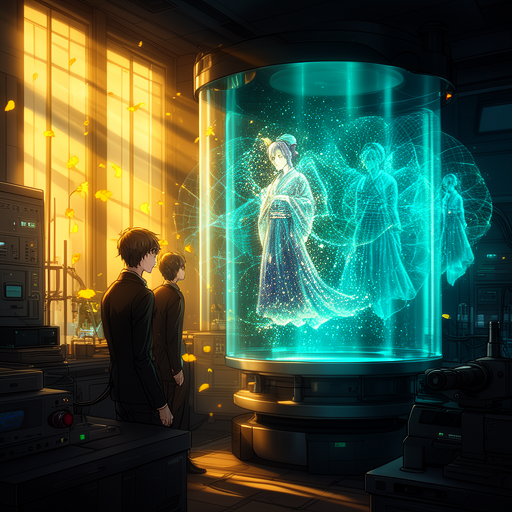
#59菜の花が揺れる春の寺で出会った旅人と美しい女性。うららかな白昼の眠気の中で、現実と夢、過去と現在が量子干渉縞のように重なり合い、失われた想いが時空を超えて結像する幻想光学ロマンス。
感情の過剰な共感ネットワークに疲弊した現代の視覚科学者が、あらゆる通信を遮断した山間の保養地『那古井』を訪れる。「非人情」という東洋の美的距離感を神経科学で再定義し、謎めいた女性・那美との対話を通じて心の平穏を取り戻す。
爛漫と咲き誇る桜の美しさに眩暈を覚えた主人公は、根元の土壌メタゲノムと菌根菌ネットワークを解析する。地中で静かに分解された無数の生命の記憶が、いかにして春の圧倒的な花弁の色彩へと変換されるのかを解き明かす幻想科学譚。
 #56
#56
怪談と人魚伝説が交錯する港町の怪事件。すべての超常現象を現代の分子生物学と法医学プロテオミクスで論理的に解体し、その奥に秘められた純愛を救い出す。
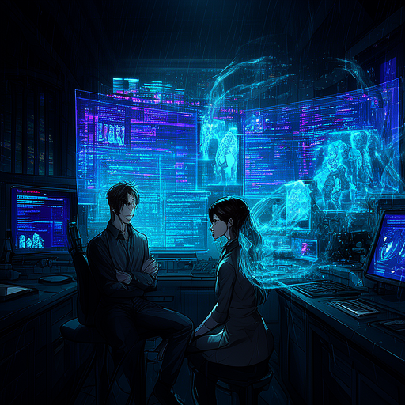
#55虚言と真実が幾重にも織り交ぜられた手記の迷宮。ネットワーク科学と情報理論のメスが、少女たちが作り上げた「優しい嘘」の裏に隠された真実の祈りを解き明かす。
太平洋の深海底に発見された巨大な水没カルデラ構造。宇宙線ミューオン探査が暴き出した海底の巨大空洞都市と、地球の未来を救う超臨界エネルギー。
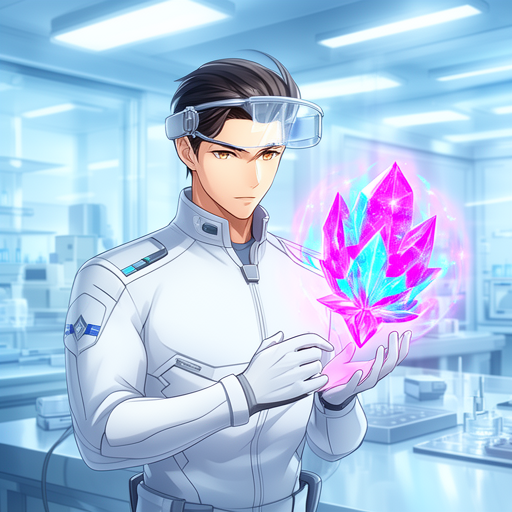
#53火星サンプルリターン探査機が地球へ持ち帰った未知の結晶体。地球の炭素生命とは異なる原理で思考する「火星の知性」とのファーストコンタクト。
戦争で四肢と発声を失った夫と、彼を介護する妻。従来の悲劇的な結末を覆し、最新の脳波デコーディングと触覚共有技術によって二人が真の対話と尊厳を取り戻す再生の物語。
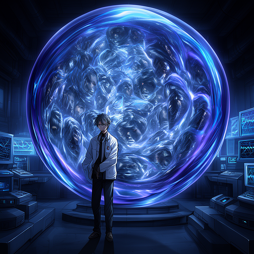
#51内面が完全鏡面となった球体実験室に入った光学研究者。無限に反復される自己像と光の干渉の中で、普段の人間が決して見ることのできない「真の自分の姿」を目撃する。
天下第一の弓の名人を目指した紀昌。眼球の微動制御から神経回路の完全自動化を経て、ついには「弓という概念そのものを忘却する」究極の境地へ至る数理哲学SF。
 #49
#49
地球軌道から流刑衛星へ向かう小型護送シャトル「高瀬舟」。罪人とされる喜助の澄み切った幸福感と、安楽死を巡る深い問いが護送官・庄兵衛の心を揺さぶる。
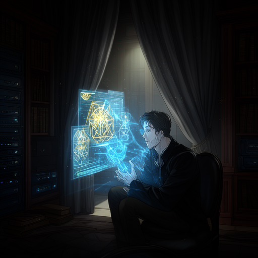
#48「先生」から届いた長大な暗号化メモリ遺書。百年前のKとの悲劇的な記憶を追体験した「私」が、先生が最後に遺した本当の希望のメッセージに辿り着く。
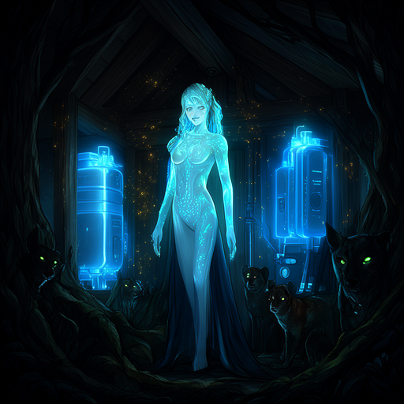
#47飛騨の深山に迷い込んだ旅の青年が出会った、輝くばかりに美しい孤屋の女性。周囲の動物たちが持つ「人間と同じ瞳」の謎と、森の生態系が秘めた真実。
人間不信の統治者ディオニスが支配するデータ都市。人質となった親友セリヌンティウスを救うため、太陽電池が切れる日没までに荒野を疾走するメロスの信頼証明。
 #45
#45
九月一日の風と共に過疎の村の分校へやってきた謎の転校生。大気の渦と風の流れを自在に読み解く少年との十日間の交流と、嵐の朝の別れ。
深山に佇む最新鋭の無人スマートレストラン「山猫軒」。次々と提示される快適な指示（ナッジ）に従ううちに、人間自身が「食材」へと誘導されていくブラックユーモアSF。
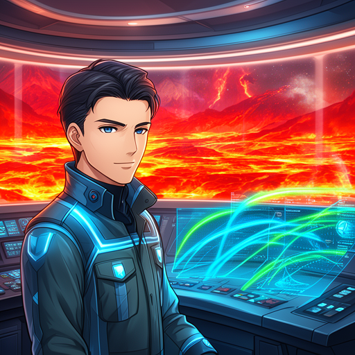
#43イーハトーブを襲う深刻な冷害を救うため、かつては一人の青年が命を賭して火山を噴火させた物語。現代科学のリブート版では、ブドリが構築した自律型地球工学ネットワークとAI予測モデルが、誰一人の命も犠牲にすることなく大地に温かい春を取り戻す。
 #42
#42
莫大な富と引き換えに「どんな幻を見ても決して声を出してはならない」という時間圧縮VR試験に挑む青年。完全な無感情を超えた先に見出す人間らしさの証明。
 #41
#41
荒廃した巨大都市の境界ゲート「羅生門」で生きるために死者の資源を回収する老婆と下人。極限の生存環境で人間の道徳が反転する瞬間を数理的に描く。
中世の城館を模した超スマート建築で起きる連続密室殺人。膨大な科学知識の迷宮を、形式論理の自動定理証明と物理化学解析で切り裂く本格推理。
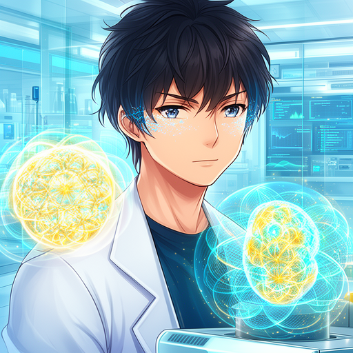
#39記憶を失った青年が精神病棟で目覚め、自らの正体を追う究極の迷宮。世代を超えてRNAに刻まれた記憶と再帰関数が導く驚愕の真相。
 #38
#38
満開の桜の森の下で人を襲う圧倒的な孤独と狂気。究極の仮想美空間を作り上げた技術者が、花吹雪のホログラムの果てに見出した絶対的静寂と愛。
「百年待っていて下さい」と言い残して眠りについた女性。極低温ガラス化睡眠と量子時間制御の果てに、百年の時を超えて咲く白百合の真実。
咲き誇る桜の樹の下に埋められた秘密。根系と共生菌類が織りなす地下の巨大バイオ通信網が、失われた記憶を花弁の分光スペクトルとして再生する。
イーハトーブを襲う深刻な冷害を救うため、かつては一人の青年が命を賭して火山を噴火させた物語。現代科学のリブート版では、ブドリが構築した自律型地球工学ネットワークとAI予測モデルが、誰一人の命も犠牲にすることなく大地に温かい春を取り戻す。
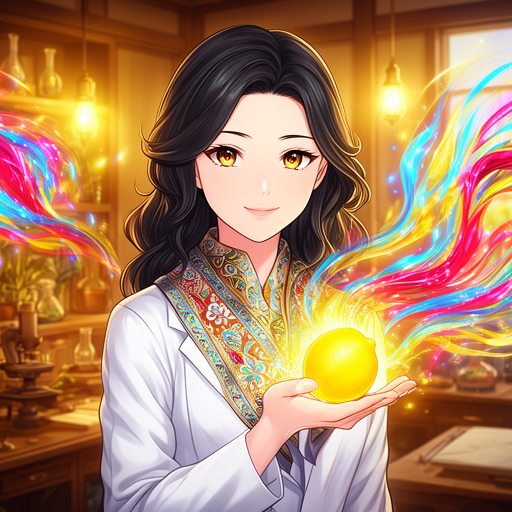
#34憂鬱な青年の心を救った一顆の檸檬。人類の全芸術アーカイブを封じ込めた檸檬型の光量子結晶が、灰色の管理都市に色彩と感動の連鎖反応を巻き起こす。
詩人としての自尊心と羞恥心から虎へと変貌した李徴。野生捕食獣のバイオハイブリッド義体へ神経回路を転移した孤高の数学者が、旧友に託す最後の定理。
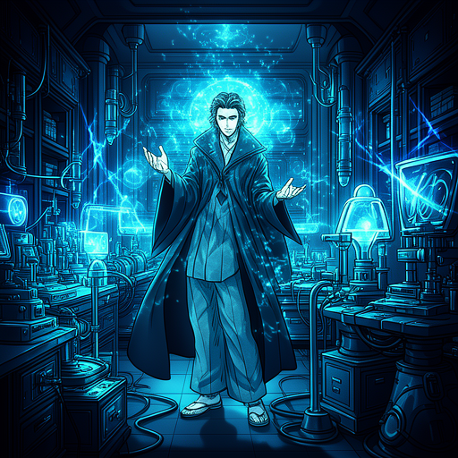
#32地獄の底へ垂らされた一本の蜘蛛の糸。崩壊する地下シェルターから地上へ伸びる極細ナノチューブ・テザーを巡り、ゲーム理論の極限で試される人間の利他心。
人間社会の価値観が反転した河童の国。出生前に遺伝子と社会契約を自己決定するアルゴリズム社会が突きつける、自由意志と幸福の数理的ジレンマ。
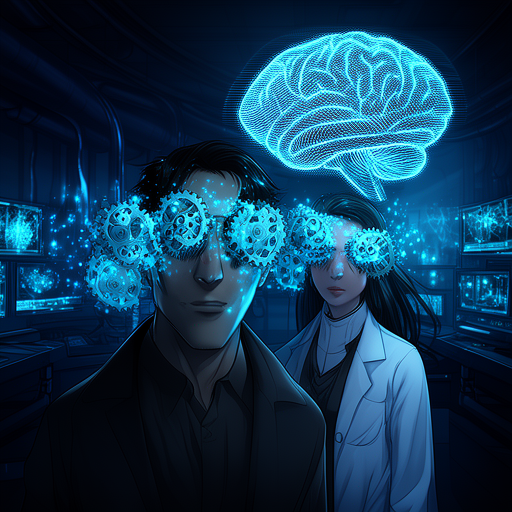
#30視界の片隅で回り続ける半透明の歯車と、日常のあらゆる偶然が自分を追い詰める暗号に見える恐怖。最新の計算論的精神医学と非侵襲ニューロモデュレーションが、孤高の作家の脳内で渦巻く予測誤差の嵐を静かに解きほぐしていく。
夜空の星々を巡る銀河鉄道の旅。量子もつれネットワークで結ばれた深宇宙中継列車の中で、親友と交わす永遠の別れと宇宙の真理。
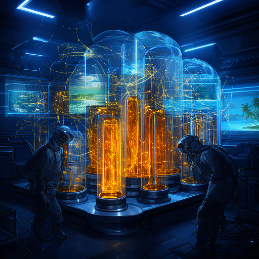
#28絶海の孤島から流れ着いた3本のガラス瓶。現代の海洋物理学と年代測定技術が、順不同の3通の手紙の正しい時系列を解き明かし、孤島で生き抜いた兄妹の純粋な魂の記録を未来へと救い出す。
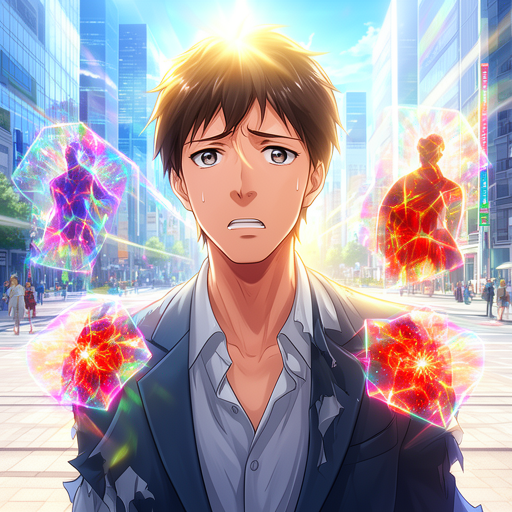
#27白昼の街頭で男が語る凄惨な殺人の告白は現実か幻覚か。現代では、脳のベイズ予測符号化モデルの死角を突く敵対的感覚パッチが引き起こす集団白昼夢。
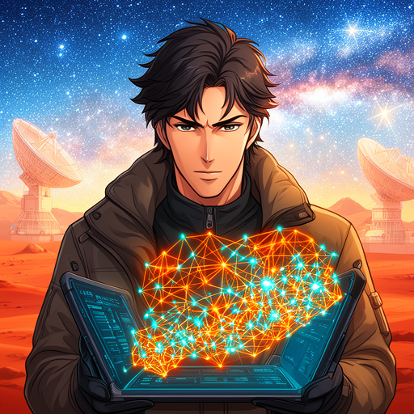
#26火星から飛来する謎の無人機団。自己複製オートマトン理論によって幾何級数的に増殖する未知の知性と、地球防衛を賭けたアルゴリズムの激突。
深海一万メートルの極限水圧下で消息を絶った潜航艇。海洋音響物理と情報理論の誤り訂正符号が、深海深淵からの暗号通信を復元する。
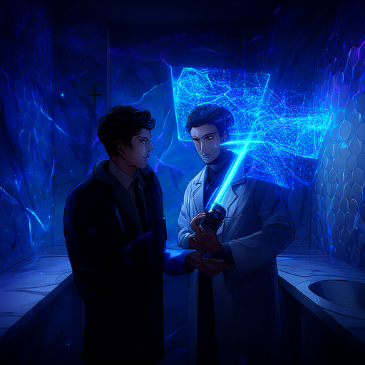
#24電撃死した被害者の謎を追う探偵。不可視の微小漏洩電流の経路をトポロジーと複素解析の数学的証明で暴き出す理詰めの科学サスペンス。
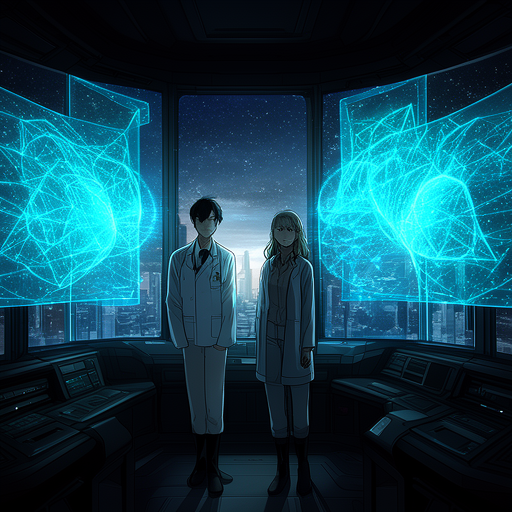
#23地球の公転軌道が突如狂い、全球凍結の危機が迫る。天体力学の三体問題とシンプレクティック幾何学計算が導き出す軌道奪還の決死行。
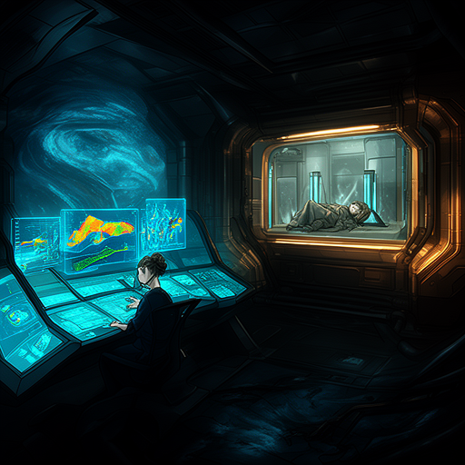
#22地球内部のマントル層を突破し地底を進む地底戦艦。地球物理学と数理逆問題解析が解き明かす、地球コアに秘められた驚愕の真実。
孤島を改造して地上の理想郷を築こうとした男の狂熱。現代では、島全体を数理複雑系の安定アトラクターとして設計・再構築した地球惑星環境工学の極致。
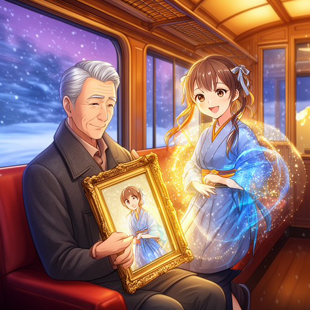
#20望遠鏡を逆さにして絵の中の美女と永遠を共にする老人。現代では、光速度限界で動作する超伝導量子チップの内部世界へとダイブし、計算論的時間の果てに愛する人と旅する至純のSF。
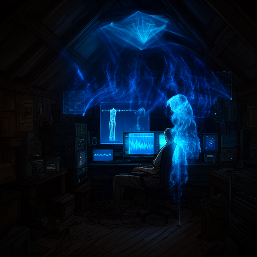
#19下宿の屋根裏から他人の生活を覗き見る男。現代では、壁の向こうの不可視の電波散乱行列から数理逆問題解析で生体信号を復元し、突発事故から命を救う遠隔共感テクノロジー。
完璧な論理で心理試験を欺こうとする犯人と明智の対決。現代では、脳血流を完全に制御する天才と、ゲーム理論・計算複雑性の死角から真実を暴くニューロAI。
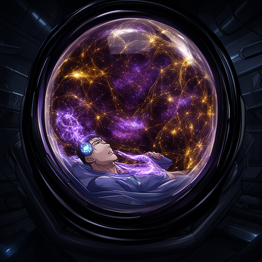
#17全方位完全反射の球体鏡に身を投じた男の狂気。現代では、光子の無限反復反射による非ユークリッド量子コヒーレンス空間で、宇宙背景放射と意識が調和する究極のワンダー体験。
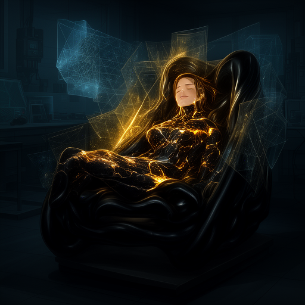
#16椅子の中に潜み、座る人間の体温や感触を味わう家具職人。現代では、座る人の疲弊した心身を生体テンソル解析で包み込み癒やす自律型スマートチェアに宿る、亡き技術者の愛と記憶。
昆虫の生態を狂わせるフェロモンの研究が生み出した、人間をも誘導する恐るべき群れ制御技術。分散コンピューティングとグラフ理論が暴く集団心理の創発。
肉体が徐々に金属へと置換されていく奇病。ナノマシンによる生体鉱物化の脅威と進化の選択。
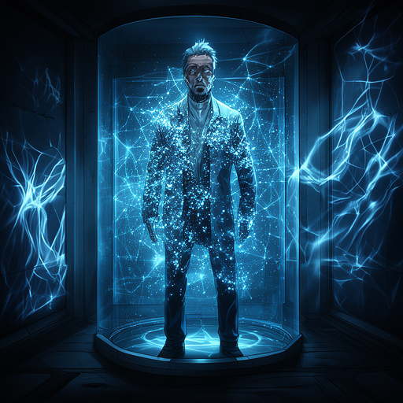
#13三次元の密室から忽然と消失した囚人。四次元ポケット空間に迷い込んだ男の孤独と生還の試み。
天空に浮かぶ巨大人工浮遊要塞。成層圏で自給自足する超伝導空中都市の独立と墜落の危機。
顔を完全に偽装し他人に成り代わる鉄仮面の怪人。生体認証社会を崩壊させるバイオ・ハッキング。
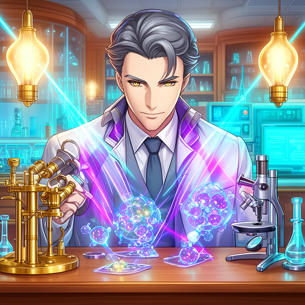
#10科学の死角を突いた完璧な密室殺人トリック。現代の量子・ナノ物理による観測不可能な犯罪工学。
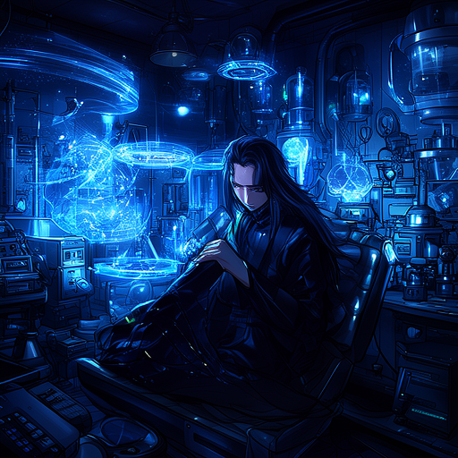
#09世界を瞬時に滅ぼす究極兵器の完成がもたらす逆説的平和と狂気。
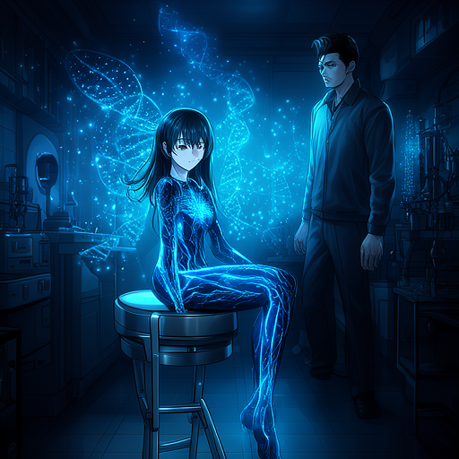
#08人間の肉体や骨格に極秘情報を音響溝のように刻印するスパイ。現代ではDNA配列やエピゲノムへの暗号化記憶。
凶悪犯の脳を外科的に手術して温厚な人格に作り変える試み。だが善悪の反転には予期せぬ代償があった。
他人の見る夢をスクリーンに映し出す装置。他者の深層心理に侵入した技師が恐怖の悪夢に囚われる。
日光と水だけで生存する人間を作ろうとする研究。植物と融合した被験体は驚くべき生態変化を遂げる。
物体の固有振動数に合わせた不可視の波を照射し、遠隔から建築物や生体を共振破壊する狂気の科学者。
人間そっくりの人造人間が起こす事件。生体組織と半導体の融合バイオコンピュータが自我を持つ。
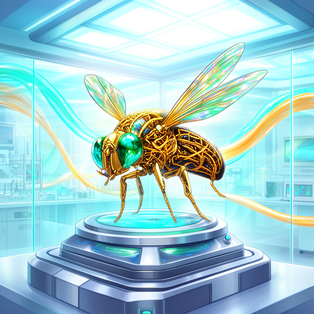
#02蠅の姿をした謎の潜入者が密室の機密を盗み出す。現代では昆虫サイボーグやMEMSマイクロドローンによる究極の諜報戦。
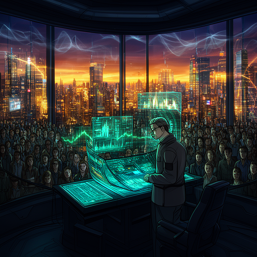
#01夕方18時になると流れる音楽浴で市民が多幸感に浸るが、その背後には音響技術による精神統制が隠されていた。